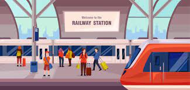
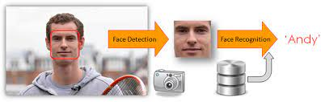

- Online Electricity Bill Payment
- This project manages units, bills, customer reading and consumption. The main
objective to develop this project is to overcome the manual errors and make as
computerized system.
- Train Arrival and Departure

- It is newly designed computer graphics mini project in this there will be a objects
like train, signal and place called railway station.
- Automated Criminal Identification By Face Recognition

- The main objective of Real-time criminal identification based on face
recognition application is to help police personnel identify criminals.